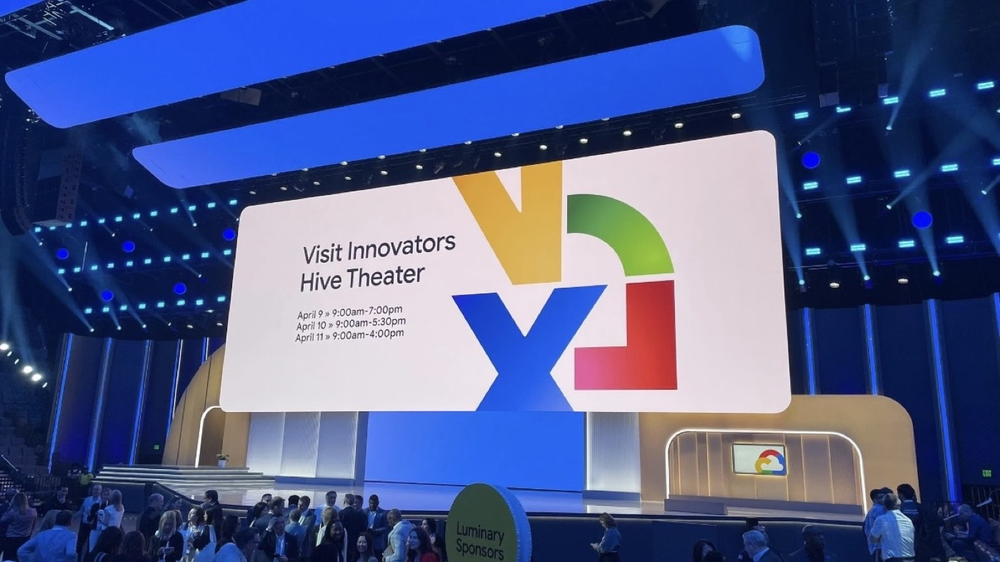

By David
A school district does not buy an LED display the way a business does. The money is public, several people have to agree, the purchase may have to be advertised and bid, and the decision is often made at a board meeting that sits on a fixed calendar. Vendors who quote a district as if it were a private customer lose to vendors who understand the process.
This guide sets out how a K-12 district in the United States typically buys an LED display, who is involved, and what a supplier has to bring to be part of a bid.
A district purchase rarely has a single buyer. Four roles usually appear, and they want different things.
The technology or IT director cares about the control system, the network, and how the screen is driven. The facilities or maintenance lead cares about structure, power, access for service, and who repairs it. The programme side — athletics, performing arts, or teaching and learning — cares about what the screen is for. And the business or purchasing office owns the process itself: the solicitation, the compliance documents, and the contract.
The screen can be wanted by one group and blocked by another. A wall that the athletics department loves but that facilities cannot service from the front is a wall that does not get bought.
The funding source shapes the purchase more than the specification does, because different pots carry different rules.
| Source | What it usually means for the purchase |
|---|---|
| Operating budget | Annual and repeatable. Suits smaller screens and gradual refresh, and often sits below the threshold that forces a formal bid. |
| Capital budget | Planned replacements and new build. Larger amounts, longer approval chain, fixed project years. |
| Bond or referendum | Voter-approved borrowing for facilities. Amounts are larger, the spending window is defined, and the scope is usually locked early. |
| Grants and programme funds | Purpose-tied. Whether a display qualifies depends on the programme, and the district's designated coordinator confirms eligibility. |
| Booster clubs and PTA | Donated funds, often for athletics or performing arts. Frequently the trigger for a screen that the general budget would not fund. |
The practical point for a vendor is that the funding source is knowable, and that asking which pot is paying tells you the timetable, the threshold and the paperwork before you quote. Bond and grant money in particular brings conditions that a general operating purchase does not.
There are three common routes, and a district picks one according to its own policy and state law.
Below the district's threshold for a formal solicitation, the purchasing office may simply collect two or three quotes. This is the fastest route and the one where a vendor's relationship with the school matters most.
Above the threshold, the district advertises an RFP or invitation to bid, sets a closing date, and evaluates responses against stated criteria. Responses that miss a required document are commonly rejected regardless of price, which is why the compliance paperwork is not a formality.
Many districts are allowed to buy through a cooperative purchasing organisation or a state contract, using pricing and terms that were competed once at a larger scale. This route skips the district's own solicitation and is often the fastest legal path to a purchase. Whether a given cooperative is open to a given district is a question for the district's purchasing office.
District purchases run on a calendar that a private customer does not have.
Needs are assessed during the school year. Budgets are set on an annual cycle. Solicitations are advertised with a closing date. Awards that exceed a set amount go to the board as an agenda item, which places them at a specific meeting. Delivery and installation are then scheduled into the window where the space can be closed — very often the summer break.
The consequence is that a district purchase can be technically ready in spring and still not be installed until the following summer. Vendors who lead-time their proposals around the school calendar win work that vendors quoting on a generic lead time do not.

Because the money is public, the paperwork is part of the product. A district commonly asks for:
A tax identification form such as a W-9, so the district can pay the vendor. A certificate of insurance covering the work on site. An authorised signatory for the contract. Evidence of the safety listing the product carries for its intended location. And, where federal funds are involved, whatever additional clauses attach to the award — wage and domestic-preference conditions are the two that most often appear, and both are conditions of the funding rather than of the product.
None of this is guesswork at the time of the bid. It is knowable in advance, and it should be assembled before the solicitation closes rather than after.
Districts normally contract with a local or regional vendor who carries the warranty and the service obligation. The manufacturer sits behind that vendor as the supply source.
That does not leave the manufacturer out of the process — it changes its job. The manufacturer has to hand the vendor the documents the district will ask for: dimensioned drawings, cut sheets, the safety listing, and clear warranty terms, in a form the vendor can drop into a submittal without rewriting them.
Our factory runs 8 IC production lines and 7 LED SMT production lines under ISO 9001:2015, with CE, FCC and RoHS certification. We issue cut sheets, dimensioned drawings and warranty documentation for submittals, supply on a 15 to 20 working day lead time, and back fixed installations with a three-year warranty. For the specification side of a school project, our COB CV-PRO fine-pitch series and D-PRO outdoor series cover the two most common cases: an indoor hall wall and an outdoor field or stadium screen.
Related reading on the buying side: how to write an LED display tender specification and LED displays on campus.
Send your specifications for a detailed LED display price quote with UL/ETL certification.
Request Price Quote Chat on WhatsApp